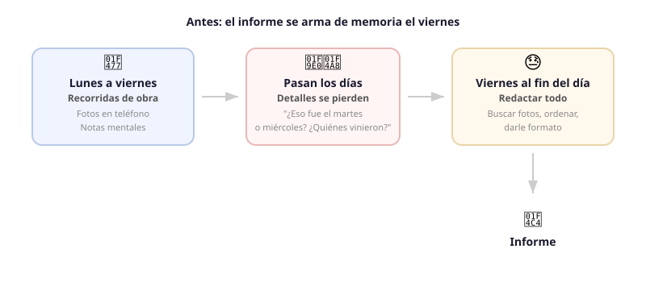
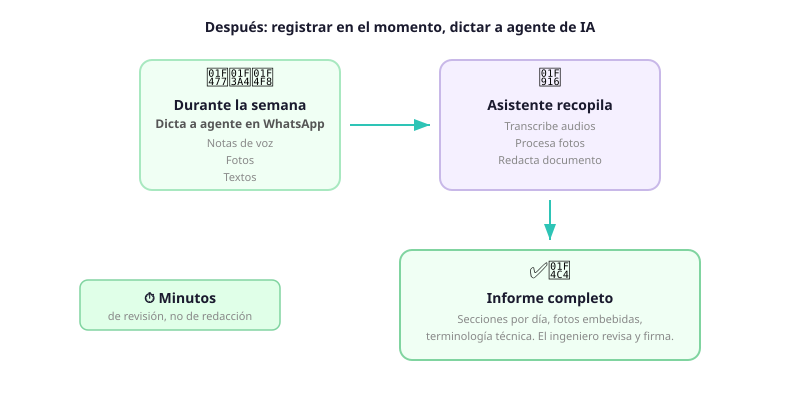

Un ingeniero visita obras en construcción todos los días. Recorre, observa y documenta. El viernes, al final del día y de la semana, se senta a redactar el informe semanal de avance. Ordena fotos, agrega epígrafes, reconstruye lo que fue pasando para redactar lo más relevante, busca el papel con anotaciones que quedó en la camioneta. Debe recordar dotaciones, medidas, desviaciones, clima, y todo lo que requirea una futura auditoría de obra.
El problema no es que el ingeniero no sepa cómo o qué escribir. El problema es que puede olvidar cosas ese viernes a la tarde, lleva tiempo, y ese tiempo compite con tareas urgentes en el corto plazo.

La solución: dictar a un agente
El ingeniero usa WhatsApp para comunicarse con el equipo. Creamos un agente que se integra a su herramienta de trabajo. En conversación con su agente, envía fotos, audios, textos, comentarios. No necesita ser formal o particularmente ordenado: el agente se encarga de compilar un informe siguiendo sus instrucciones.
Al final de la semana, el agente compila el documento, y notifica al ingeniero si hay secciones faltantes para completar. El ingeniero revisa, corrige, y almacena para futura referencia, ahorrando esfuerzo automatizable hacia el fin de la semana.
El agente:
- Transcribe audios. El equipo habla en lenguaje técnico de obra, el transcriptor formaliza sin cambiar terminología de campo.
- Procesa fotos. Las imágenes se agregan en el día y horario indicado, con descripción pertinente.
- Redacta el informe. Arma el documento Word con la estructura que el equipo necesita: secciones por día, descripción técnica de trabajos, fotos con referencia, y marcas explícitas donde falta información. No inventa datos: si algo no se mencionó, lo señala.
El resultado es un borrador de informe semanal generado en minutos, no horas. El ingeniero lo abre, completa, y firma. En vez de redactar desde cero y recordar días pasados, revisa un documento 80% completado y con el formato correcto.

Dónde aplica el mismo patrón
El patrón es: un profesional en campo tiene la información pero no el tiempo ni el formato para documentarla. Un asistente toma la captura cruda y la convierte en documento formal. El profesional revisa en vez de redactar.
- Inspecciones de seguridad e higiene. Un responsable de seguridad recorre una planta, graba observaciones y saca fotos de las condiciones encontradas. Un asistente arma el acta con las no conformidades detectadas, las fotos como evidencia y las referencias normativas correspondientes. El responsable revisa y completa en vez de redactar el acta desde cero.
- Relevamientos topográficos. Un topógrafo en el terreno toma mediciones, saca fotos de los puntos relevados y dicta observaciones sobre el estado del terreno. Un asistente consolida los datos en el formato que requiere el informe técnico. El topógrafo verifica los números en vez de armar la planilla.
- Pericias y tasaciones. Un perito visita una propiedad, registra el estado de cada ambiente con fotos y notas de voz. Un asistente organiza las observaciones por ambiente, inserta las fotos y genera el borrador del informe pericial. El perito ajusta las conclusiones en vez de transcribir las observaciones.
- Seguimiento de mantenimiento industrial. Un técnico recorre una planta haciendo mantenimiento preventivo. En cada equipo, anota el estado, las mediciones, y si hay algo fuera de rango. Un asistente compila la ronda en el formulario estándar de la empresa, señalando los ítems que requieren atención. El técnico valida y escala, en vez de llenar planillas a mano.
- Certificaciones de avance. Un director de obra certifica el avance mensual de cada contratista. Camina la obra, mide, saca fotos, compara contra el plan. Un asistente cruza las notas de campo contra el cronograma y arma la planilla de certificación con los porcentajes de avance y las diferencias detectadas. El director revisa los números en vez de armar la certificación desde una hoja en blanco.